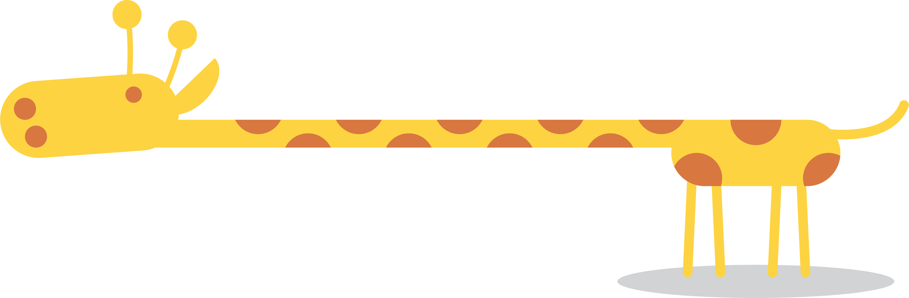
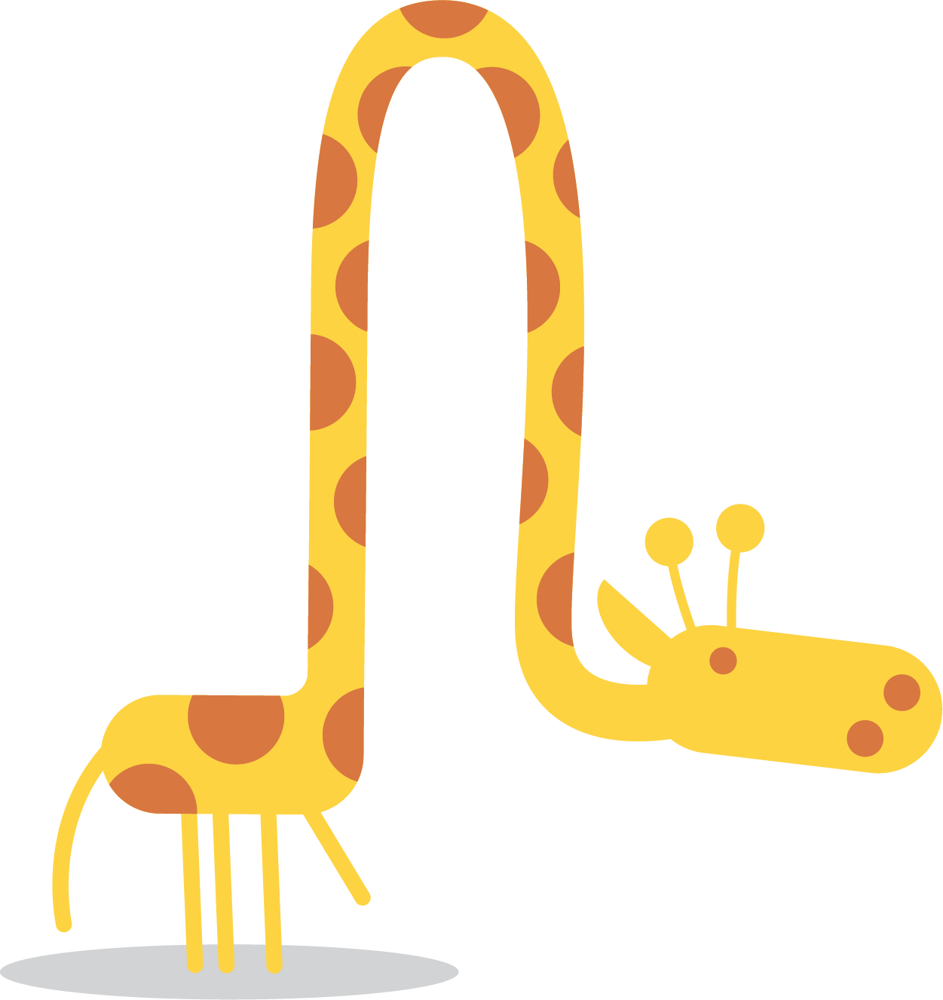

Gung-ho Giraffe
A Giraffe Ate Your Tulips
by Patti Masterman
poemhunter.comThere really is no nice way
To tell you what I saw;
But a giraffe ate your tulips-
He chomped them with his maw.How he came to be there,
Inside your flower beds,
I really cannot tell you but-
He bit their bulbous heads.He chewed them up a time or two,
And swallowed each in turn,
Then took a sip of water
At the bird bath, by the urn.He ate them all quite neatly-
(I think his favorite's red)
And wiped his mouth on branches,
Then scratched his spotted head.All day I've been debating
Just how to break the news;
But a giraffe ate your tulips,
And then he had a snooze.He snoozed against the carport,
And he swatted at the flies
With his handy tail-swipe,
When I swear I heard him sigh.And I'm mostly sure I heard him
Belch a time or two,
Before heading for Mrs. Johnson's-
Where he ate her tulips too.I know you miss your tulips;
They had the strangest fate,
But a tulip munching giraffe,
You could not anticipate.You ought to plant more tulips;
I don't think he's coming back-
But maybe choose a different shade-
That giraffes will not snack.
Fun Facts
- The giraffe is the tallest mammal in the world, standing at around 4-5m high. That’s over a meter higher than a double-decker bus.
- Despite being incredibly tall, giraffes still only have seven vertebrae in their neck – the same number as humans and most other mammals.
- A giraffe’s neck is too short to reach the ground. As a result, it has to awkwardly spread or bend its front legs to reach the ground for a drink of water.
- Giraffes only need to drink once every few days. Most of their water comes from all the plants they eat.
- Unlike most other four-legged mammals, giraffes swing both legs on the same side at almost the same time during their walk, known as ‘pacing’. This movement is lost, however, when the giraffe breaks into a gallop.
- Giraffe feet are the size of a dinner plate with a diameter of 30cm.
- Giraffes have an efficient nasal cooling system to regulate brain temperature up to 3°C lower than the rest of the body.
- Giraffe tongues are bluish-purple and between 45-50cm long.
- To protect the giraffe’s brain from sudden changes in blood pressure when it lowers its head to drink, it has valves to stop the back-flow of blood and elastic-walled vessels that dilate and constrict to manage flow. NASA has done research on the blood vessels in giraffe legs to get inspiration for human space suits.
- Just like human fingerprints, no two giraffes have the same coat pattern. It is thought that the coat pattern on a giraffe doesn’t just serve to camouflage the animal, but also helps with temperature regulation too. The coloured skin patches can act to dissipate heat around the body, as the temperature of the skin is slightly higher in darker regions, facilitating the dilation of vessels beneath the skin’s surface.
- As a giraffe ages, calcium deposits form on the skull, making it heavier and more robust, and therefore an effective weapon.
africageographic.com